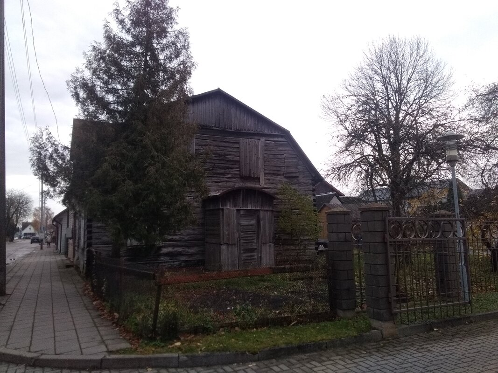
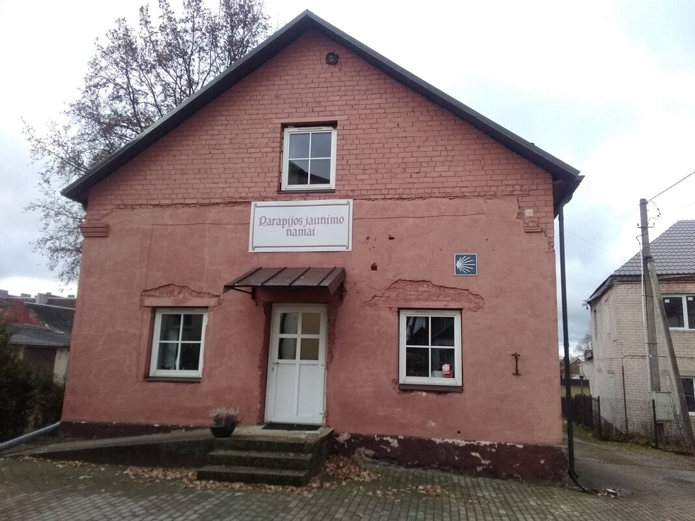
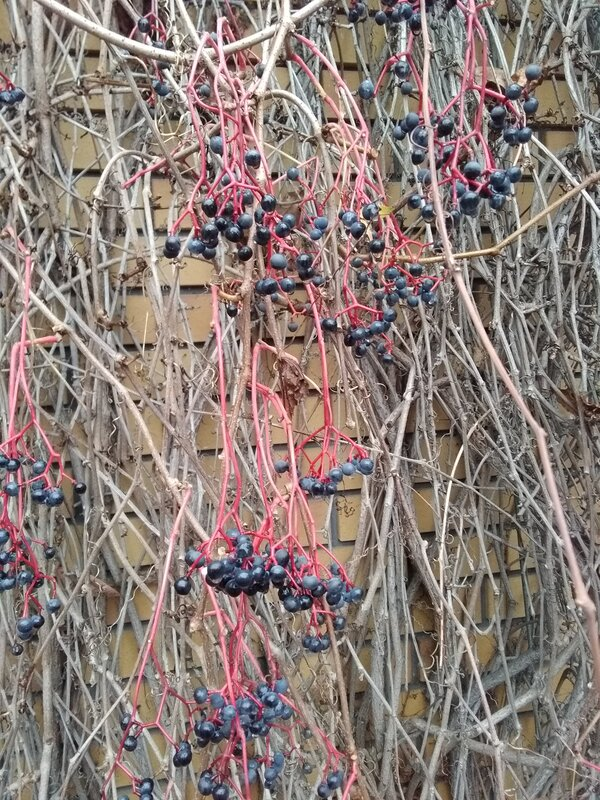

Goldap and Andrzej
The fact that I am receiving more and more messages asking me for news tells me that I may have once again stretched the time limit for updating my progress. And now, as I reread myself, I realize that this message is going to be really long. Maybe to compensate for the delay. Well, if it’s too much, don’t hesitate to complain.
And something else: regarding the photos, I am experiencing an as-yet unsolved problem. They are missing, or at least a large part of the period I am writing about now. I do not know why or if I will be able to find them in the depths of my phone’s memory, or if they are definitely gone. So I apologize to those of you who enjoy the photos—especially those who don’t care much for the reading and just like to look at the pictures!
The last time I wrote to you, I stopped at the Hill of Crosses, of which I have fond memories, though they already feel a little distant. There has been a lot of water under the bridge since then—and lots of things floating with it.
There was Šiluva, the fourth destination on my journey. A place I’ll let you discover on the internet if you wish, as it is described there far better and in more detail than I could manage. I stayed there for four days, hosted by the pilgrims’ center. The team in charge of the center and welcoming pilgrims was very dynamic and enthusiastic. Once again, I can only partially convey the warmth of the welcome I received, the meetings I had there, and the quality of the discussions we shared.
It exceeded my expectations. And the place itself! Well, let’s just say that I’m glad I heard about it and had the chance to be there.
When I felt ready and rested, I chose to resume my way towards Gietrzwałd, via Święta Lipka in Poland this time. This route would allow me to go around the small part of Russia that lies between Poland and Lithuania, as I didn’t want to cross Russia (visas and administrative costs are troubles a pilgrim can do without). In doing so, it also took me through Kaunas.
Kaunas is the second-largest city in Lithuania, but let me specify that the concept of a big city is very subjective. Second-largest city in Lithuania—that must be considered at the scale of the country, of course. I say this for my Indian friends, for example, for whom the second-largest city in their country must be Mumbai, with a population six times greater than the entire Lithuanian population, not counting the Mumbai agglomeration...
Although I am not fond of walking through large cities, the need to renew some of my equipment, wardrobe, and shoes made the stop necessary. The presence of a military store that could provide more durable materials and equipment, combined with the old town and many beautiful buildings and churches, made the prospect more appealing. Additionally, I was informed about the presence of a pilgrim shelter there, which made the city all the more accessible, and ultimately, the choice as a stopover was made quite naturally.
And I’m really glad I did...
First and foremost, because the trip between Šiluva and Kaunas was one of the most picturesque country paths I’ve had the opportunity to walk. In the midst of verdant nature with autumnal colors, I walked along a small stream, then a bigger one, taking care to enjoy these magnificent and almost wild places as much as possible.
Besides, I would like to tell you about a meeting with this nature that happened there, but I want to do it nicely and fully, and I’m afraid it might be too long. Too much of a digression for here, so I will include it as a postscriptum.
Then, and I know it becomes redundant, but I am not tired of it—the welcome I received in this city was really, really nice. I was lucky to be hosted in the center of the old town, probably the most beautiful part of the city. And so, as hoped, I took advantage of the pretty town (churches, old streets, squares, and buildings), but also of the practical side (buying the necessary equipment and food, washing my sleeping bag that was smellily screaming for it!).
And the meetings—again, always, everywhere. I was not only welcomed, guided, and accompanied in my efforts but also taken to visit superb places that would otherwise have remained unknown to me (it’s very annoying not to be able to show you pictures!).
And there again, in those meetings—I am not tired of it—each time, the kindness, the availability, the generosity, and the accompaniment, if needed or desired.
Then I resumed my way towards the border. Easy and slow. Really slow because over the past few weeks, my back pains have given me small reminders. Nothing in comparison to before, but still, I’ve learned to be gentler with myself and to listen to my body’s complaints. I forced myself to walk only one day out of two, sometimes one day out of three. It was necessary and beneficial.
I am stretching better and better, more and more, which is a really good sign! The way—to be walked far and long—teaches you to be kind and fair to yourself. The need is to be happy. Happiness gives wings. But not only that; somehow, I believe it heals...
I am now in Poland, in the small town of Gołdap, from where I am writing to you. It is 3 km from the Russian border.
If you keep up with "current affairs," you are likely informed about the situation with the instrumentalization of migrants from the Middle East, flown by charters to Belarus and then guided to Poland and Lithuania with the obvious aim of political destabilization and financial gain. For me, this results in being checked by flying customs controls—up to three times a day.
Nothing unpleasant—the checks often end in nice discussions about what moves me...
And it’s not just the border police cars that stop; sometimes people do so as well, just to check on me—with kindness, to help, or out of curiosity. And that’s how I met Andrzej (Andre, but we are in Poland, so you have to add “z” or “w” all over the place. I’m sure it’s just to make certain words unpronounceable for tourists or pilgrims. Only certain words, though, because in this example, Andrzej is written unpronounceable but pronounced Andre. Crazy tongue movements in my mouth...).
But to make it short, the car stops, the window goes down, and Andrzej gets very enthusiastic when I finish the short briefing of Emmanuel Gump—the roadside version...
He is seriously ill. A former soldier in forced retirement due to an unknown or poorly understood illness (we discussed in English, and Andrzej’s English is certainly much better than my Polish, but still a little light for technical details). He tells me it’s very good that we meet, and asks if I could bring prayer intentions to Gietrzwałd for him.
Of course—certainly—it’s my pilgrim duty, and I ask him to write them down in the notebook I reserve for this purpose.
He then asks about my route and exclaims that I’ll be passing through his city, where I must stop. He doesn’t guarantee that his wife will agree to lodge me, but he says he’ll speak to the priest and assures me that I’ll be welcomed anyway. I have no doubt about that. Truly. No matter where, when, or how, I know it’s going to be alright.
We exchange phone numbers, and I resume my journey.
The next day, I receive an SMS from him with a photo of "his" church. He gives me an appointment there the following day at 5 p.m.
Funny thing—when I arrive in Gołdap the next day as planned, but much earlier (around 12:30 p.m.), I look at my map for the church. Seeing only one, I head for it. But when I see its steeple, I realize it doesn’t match the photo he sent. And I can’t see any other church nearby.
So I decide to ask passersby. First, a lady who doesn’t speak English (nor French, nor Tamil—well, okay, I didn’t ask about Tamil). Then a delivery boy who eventually speaks Russian. Finally, I consider approaching the only individual remaining in the area, a few hundred meters down the street. I think that if he doesn’t speak English either, that’s fine—I’ll just call Andrzej.
But before I can reach him, he speaks to me from a distance—in English—to ask if I need anything. Before I can respond, he’s already reached me.
Guess what: it’s Andrzej!
He was passing by on his way back home from a friend’s house. He couldn’t believe the coincidence. I don’t want to sound jaded, but I’m used to it now. For him, it’s a big coincidence; for me, it’s Friday. I mean, it’s been 13 months that everything has been going better than expected, and I’m finally really confident.
At the beginning, faced with this level of coincidence, I might have hesitated (not for long) to consider the possibility of surveillance of the pilgrim’s activities by the Polish secret services. But now I know it’s just like this. It’s become routine (but not boring!). Welcome to the pilgrim world...
We talk together while walking. There is indeed a room waiting for me. Yup! Hot shower (necessary...) and everything else that goes with a roof in general—you know the drill already...
He leaves me at the church, where I have to wait for someone to pick me up. The priests are busy; it may take a while. Andrzej is also very busy and has to leave immediately. So I stay in the church, which suits me well.
It’s small, cute, warm, old, and nice. I put my backpack in the entrance, sit on a bench, close my eyes, and before I realize it, an hour and a half have passed. It feels good to close your eyes sometimes. This was one of those times.
When I take my backpack back, because Father Mathieu comes to get me and invites me to follow him to my room, I notice a plastic bag placed on it, under my hat, which was on top. Inside: a chocolate bar, bananas, and dry sausages.
Someone, totally unknown to me—Andrzej, the priests, or someone else—went to the store next door after seeing my bag, or me, or both, bought these little treats, and left them under my hat. I didn’t see anything and have no idea who could have done it.
But I’ve been here less than two hours, and this has already happened. Isn’t it touching? Seriously. Sweetness. Kind attention.
I’ll give away the dry sausages—I’m a vegetarian, you know—but I’ll keep the intention well in my heart. This kind of attention feeds a man well. The chocolate, too, for sure! ??
I live this permanently... I do not know if you realize... for the past 13 months. Sometimes, remembering the "mainstream" discourse of the media, or the almost universally morose discourse, I feel like I’m not on the same planet. Be careful, I was warned when I left: nowadays, you never know!
I am careful—I pay attention with enthusiasm and interest, because yes, you never know. The good, the beautiful, the kindness could crash joyfully against my armor of projections, prejudices, certainties, and precautions. Without paying attention, without being careful, I might not realize it and miss all of this. That would be a pity—a shame—sad...
I am currently staying in one of the parish houses in the city. Father Mathieu and Father Albert are welcoming me with a touching quality as well. And again, I meet and discover. I stayed two full days here; there were a lot of repairs to be done on my backpack (I had to buy stronger sewing thread).
When I’m ready to resume my journey, it will be with a backpack filled with homemade cheeses I was offered, dishes prepared for my journey by Ewa, the housekeeper here, a jar of very good honey, a dozen eggs from Father Albert’s mother’s house, and a bottle of hooch that, if I understood Father Albert correctly, is very good for me.
He explained—in pretty good French, considering how long it’s been since he last practiced it—that this drink, made from black elderberries, has powerful "reheating" properties, which should help during the winter. At 82 degrees of alcohol, I can believe it. I haven’t tried it yet—I’m saving it for the big frosts in the tent. Along with the bottle of "homemade," he gave me a small hooch glass on a pendant with straps and a leather pouch. I’m well-equipped for the road.
Our Lady of Gietrzwałd, here I come...
Voilà. That’s all for today. Well, almost, because I went on a "little" bit in the postscript...
Anyway, I wish you all well and happy!
Emmanuel
PS (long one):
In the photos, there was one of my tent by a river. I took it on the woodland route, superb in color during this autumn season, when I was along this river between Šiluva and Kaunas... Bucolic... natural... green... Superb...
I surely wasn’t the only one who thought this place deserved a stop since a wooden bench had been placed there, in the middle of this great nothingness full of nature. A few meters from the bank of the river below, in the middle of a small grassy meadow, with a magnificent view despite the bumps and hollows, like small hills and valleys. There was a small patch of flat grass next to the bench, flat and large enough for me to pitch my tent.
There was no hesitation. It was obvious that I was going to sleep here. I had to sleep here.
It may seem strange to you or hard to believe, but for over a year that I’ve been sleeping here and there, many of the places where I decide to stay the night impose themselves on me rather than the other way around. And often, those are the places where I sleep well. It’s astonishing, but when I come across these places, it’s obvious, certain. I sleep there... and I sleep well.
Once the tent was set up, the bench that had been waiting there all along did its job. I sat and watched the water flow. It’s good to watch the water flow. Really good.
And it must have been a while since I started watching the water because the sun had gone down behind me by the time she arrived.
I say “she,” but actually, I have no idea if it was a she or a he. The other thing I didn’t know was what it was.
But it was super cute, that’s for sure—really super cute.
It is often in those moments when I find myself at a standstill—whether for rest or contemplation—when my noisy and olfactory intrusion has finished disturbing the place and those who live there, when calm and silence prevail again through my immobility, and with a little luck, a contrary wind, that the most beautiful encounters occur.
And this one was a magnificent one. Do you remember the wolf that appeared, which I observed a few months ago in Poland? But there have been many others—many, but all unique and memorable... A pair of foxes once followed each other and played together, wild boars and baby boars, roe deer, deer, hinds, birds... It’s always captivating to me.
This was the first time I saw her. Her and her kind. For now, we’ll agree—very arbitrarily—that it was a she. But a what? I’m not sure... To be honest, I really don’t know.
I do know her family well, however—the mustelids. The problem is, it’s a (very) large family: from polecats to martens, including badgers, weasels, wolverines, ferrets, minks, and more. Well, these are the ones I’ve heard of or even seen, but there are many more. I haven’t yet looked for a picture online, but I’ll try to find it...
Because, of course, at that moment, even though I really wanted to take her portrait—because she was as cute as can be, and I assure you, those little beasts are insanely cute—even though I really wanted to, I didn’t move an inch. Not even a hair.
I wanted to watch her. Take my time. Not move and spoil the moment, as I did with the wolf.
I observed, prolonging the moment as much as possible before she realized, with horror, that she was within just a few steps—3 meters at most—of the most harmful and dangerous species of mammal on earth (and perhaps even of the universe; we don’t yet have proof to the contrary): a human...
A little smaller and thinner than a ferret, with pretty light gray fur. Lighter than mouse gray—ash gray, I would say.
She had just climbed the embankment from the bank of the river to the small clearing where I was going to spend the night. She stood there, motionless, and I couldn’t tell if she was looking at me or frozen, on the lookout for the slightest movement or smell, perhaps blinded by the sun, which was now behind me but certainly in her eyes.
After a wonderfully long moment of stillness, she got on her hind legs and stood above the grass to get a better view (animals know that to see better, sometimes you need to gain height! Oh captain, my captain!).
If she was cute before, suddenly, I had no words for what she became now. I was speechless—and couldn’t have spoken anyway. I was barely breathing.
Then she continued on her way, resuming whatever she had been doing before, without haste—therefore probably without fear—completely unaware of the horror of her encounter. (What could be more horrifying for a wild animal than meeting a human! Meeting two humans?)
Leaving me in awe of her beauty, I went to bed happy like a kid who had just seen his first wild mustelid and loved it.
I ate a little, then "closed" the tent (which is a big word since the zippers of both the flysheet and the inner tent are long gone). I use safety pins to close the flysheet effectively (it works very well, phew!) and have given up, months ago, on the idea of closing the inner tent. Goodbye mosquito net and privacy. Everything that can pass under the flysheet has direct access to the half-wild and hopefully sound-asleep Emmanuel. Hello spiders, beetles, earwigs, and so on.
The slugs and snails, though, are the ones whose "cuddling" I appreciate the least. Who likes sloppy wet kisses, I ask you?
So I "closed" my tent and fell asleep in an instant as soon as it got dark. Basically at 5 p.m. Well, yes, the days were still long back then. Now it’s more like 3:30 p.m. for sunset and 4:00 p.m. for full night. It’s strange to me, I admit.
And I slept really well. Very well—until I woke up. And I woke up.
That, too, is something surprising. When we sleep "outside," there’s a sort of inner wakefulness, as if part of our brain (reptilian?) remains alert to give warning if necessary. Like a sudden attack of slobbery wet kisses, for example—brrr—or a creature wriggling at my feet.
Now fully awake but taking care to remain still and breathe calmly, listening, I tried to determine what had woken me. And without waiting too long, an animal, about the size of a cat, began to fidget—right at my feet, and even partly on them.
Do you remember that night when a cat came to visit me? After overcoming its apprehensions, it entered my tent and stayed for the night. Frenzied cuddles several times during the night, followed by purring and sleeping on my sleeping bag—it was a warm encounter, full of sweetness.
But I was pretty sure it wasn’t a cat this time. Most likely, it was my afternoon friend.
I say friend—I was fully her friend. From my side, at least. As for her feelings, I didn’t really know yet.
But I admit, I had hope...
She was walking between the flysheet and the inner tent. A few times, she put her front legs on the stretched canvas of the inner tent, giving me the feeling she was climbing on my feet...
How to tell you—I was full of hope that the brotherly meeting of two predators, one of which was super cute and both super hairy, could end in sweet hugs. She wasn’t afraid; just for that, I liked her. No particular inhibition, from what I could tell, because I started to move, and she stayed. Any other animal would have scampered away in fright and howls. But not her. She was like this, you see...
Soon, I started talking to her softly.
Okay, let me stop you right there—no, I wasn’t talking to her so much to tell her something, and even less to expect an answer. I’m not that crazy yet. But I used my voice to convey feelings of calm, harmlessness, and assurance.
Animals have an intuitive, nonverbal perception capacity. We do too, of course—it’s what allows us to perceive during a phone conversation that the person on the other end is smiling. But animals are even better at this. They can feel our attitude.
And it must have worked, at least a little, because she didn’t flee despite my words. She paused for a moment, then resumed her activity.
I was really starting to consider contact! Seriously! Being able to stroke the animal would be like Christmas come early!!! We weren’t there yet, but hey—you know boys!
I took my phone to use the flashlight function and discovered two very disappointing things.
The first is that the flashlight function is antagonistic to the camera. So I couldn’t show you the magnificent little creature. Well, I say little, but she was about the size of a good-sized cat. Shorter legs. And a small muzzle with lovely whiskers.
The second—and this crushed my romantic hopes of spontaneous contact between two critters—was that she was busy with the little bag containing my rubbish and food scraps. I always take care to gather these while waiting for the opportunity to dispose of them in the first trash can I come across.
She had grabbed the bag, carried it to my feet, and began extracting its contents.
That might mean nothing to you, but for me, it meant she wasn’t there for my beautiful eyes, but for the olfactory hope of a nighttime snack.
It was a hard blow—for me and my dreams of soft, furry caresses. (Bah, yes, it must be super soft in addition to being super cute! People make coat collars out of it, let me remind you! And let’s admit it, the fur really makes you want to touch it. Forget the fine teeth at one end of the thing and the fart-spray anal glands at the other!)
It puts things in perspective and me back in my place.
And yet, I still wanted to believe it. After waiting for her to move to the other side of the tent, I reached out to retrieve the plastic bag—not easy at all, but I thought it was better to do it now than later, when all its contents would be scattered everywhere!
And then, as she still didn’t leave and my romantic hopes revived, I decided to try indirect contact—through the thin canvas of the tent. I touched her, almost stroked her. Almost, because there was the thin tent canvas between us and, quite honestly, because she didn’t really let it happen.
She still didn’t run away but didn’t let herself be touched either. As soon as the sensation became more than her own friction against the canvas—my hand pressing gently against her through the fabric—she changed position. She didn’t leave, but she wouldn’t let herself be caressed.
Finally, she began to focus her activity on my left side, right at the height of my elbow. To be precise, exactly where I store my food in the tent. Food that was protected only by the thin canvas and a Tupperware box, though she couldn’t know about the latter.
So yes, she was only here for the promises of her nose. I, meanwhile, counted for nothing. The story—our story—was doomed to failure before it could even begin.
Realizing this, the whole situation suddenly seemed absurd, a bit drawn out, a waste of time. I figured it was better to let the night offer the possibility of good sleep.
That hope vanished abruptly when she began to emit little shrill cries that, without a shadow of a doubt, reflected frustration, annoyance, and finally, anger.
It was around this time that the cute little furry creature began to turn into a real little evil pest. Forgive the expression.
She started to attack the tent—or rather, not attack it outright, but in her frustration and in trying to reach what she was smelling, she began biting or trying to bite the canvas of the inner tent.
Biting a stretched canvas is not an easy task.
I was watching her, resting on my elbow, using the arm whose hand held my phone. The phone’s flashlight beam projected between the flysheet and the inner tent, while my right hand pulled on the tent canvas to widen the gap between the two, clearing my view of the otherwise cramped space where she was putting on her show.
We were 12 inches apart—snout to snout.
Now visibly frustrated, she managed to sink her teeth into the canvas. When her grip was firm, she gave a sharp little jerk, pulling with her whole body and stepping back in short, jerky movements...
There, I really stopped agreeing with the situation. As cute as she was (I mean, you should have seen her jerking back—it was adorable!).
"But would you stop, you little evil," I said, remembering that the tone was more important than the words themselves.
We had to find an arrangement quickly, or it was going to be a very long night. An idea—almost a plan—came to me and seemed relevant: if she was no longer hungry, she would leave me alone. To sum it up.
So I opened the magic box, took out my knife, and opted for a piece of Brie. A good piece of Brie stuck at the end of the knife.
She sniffed, then very quickly grabbed the piece, took a few steps back (it’s super cute when they go backwards!), landed on her hind legs, chest upright, holding the piece of cheese with her front paws. She began tearing off small pieces, chewing them carefully before swallowing.
You might say I’m repeating myself, but God, this little beast was cute when eating something other than my tent! I could have watched her like that for hours.
She devoured the first piece very quickly, the second too, and the third more slowly. I never got bored. In addition to the hope of having satiated her so she would leave me alone, watching her eat the Brie—me being from Normandy—I felt a kind of connection, a kind of sympathy. After all, we shared certain tastes. It wasn’t all totally hopeless between us...
And finally, she left.
I was a little disappointed, all the same. I am sure of the potential for fraternization. After all, these animals have been tamed for a long time, either as pets or as burrow-hunting animals...
But she was gone. And I could relax, go back to sleep.
But she came back.
And by the time she woke me up for the second time, she had already made a hole 7 cm long by 4 cm wide.
That’s when I went for contact—but more firmly this time. No caresses.
With my phone light in one hand, I watched her closely. Each time she was about to bite the canvas, I hit her on the muzzle from the other side.
At first, just gentle taps, accompanied by reprimands with no real conviction—I mean, I was still under her charm and couldn’t bring myself to hit or scold her in anger.
But I have to admit, my patience was slowly running out.
I was really impressed by her determination—and her insolence too! After all, wasn’t she aware that she was in the presence of the worst mammal in the galaxy? Seriously? The representative of the supreme masters of all other forms of life on Earth, because intelligent, industrious, and artistic (and egocentric too...)?
She took a dozen taps on the muzzle. The last one was no longer a joke—it was a slap. A good one. And the beast fled. Phew!
Sad that it had to come to this—for a piece of Norman cheese! But now, my tent had two big torn holes and several smaller bite marks...
I was exhausted and needed sleep, but I couldn’t fall back asleep right away. The night was dragging on. And just as I was finally dozing off again, guess what—of course, she came back a third time.
Around two in the morning, another wake-up, another hole.
At that point, I began to doubt my victory over the little monster. The separation had to happen—now. A divorce, before she took the whole tent apart. But how to do that without resorting to brutality? I couldn’t go beyond the slap; it had already made my heart ache.
I really wondered how to get out of this relational impasse without ending in a brutal heartbreak...
That’s when I remembered the little pepper spray given to me by a Ukrainian security guard in Germany. He had handed it to me, saying it was for wildlife and possibly humans (apparently, sprays specifically for wildlife are stronger but forbidden for use on humans). He had insisted on telling me that there were a lot of junkies around.
Well, personally, in the middle of the woods, I had very rarely encountered junkie attacks. (The junkie is, after all, an urban animal.) But we all have our fears, I suppose. Mine? Slobbering wet kisses attacks...
In short, I looked for the small spray and, despite the probable discomfort of using it in a closed—or almost closed—space, I threatened my assailant with it.
And at that moment, I also decided that for being so persistent, she had to be a he.
Yes, I know—big discriminatory clichés, totally against any concept of gender equality.
But hey, it was the feeling of the moment, at three in the morning, on a restless night.
The first pchitt was almost nonexistent and therefore totally ineffective. I was reluctant... But when he started working on his fourth hole, he got a proper pchitt on the muzzle. A little one. Half a second. Maybe even less.
I didn’t even see him leave—it was so fast.
But it had worked.
And now I was there, and he was gone. I was relieved but disappointed. Disappointed and a little sad...
Fortunately, I had the opportunity to take some air for a good hour, to clear my head and properly ventilate the tent!
I hope the critter hasn’t had any problems because of this. I don’t think so. I am a little disappointed, not really surprised—except by his cheek, his daring, his determination...
But honestly, I remain under his spell. I assure you, these little furballs are so cute. Really...
And now, I won’t advise you to go on the internet to check whether mustelids might be a key link in triggering an unprecedented historical event—a panzootic (animal-to-human pandemic). According to Wikipedia in 2020, “mink farms are the animal farms that have been most affected by the SARS-CoV-2 virus responsible for COVID-19. If this virus were to spread among wild mustelids, the latter could become a permanent reservoir of infection for other animal species, as was the case with rabies transmitted to raccoons and skunks, or with bovine tuberculosis transmitted to badgers, or with paratuberculosis, transmissible to many wild ruminants and sometimes to immunosuppressed humans.”
But hey, without going as far as "Haaa, my God, it’s awful, we’re all going to die," it’s true that mustelids become less cute when you read that.
I guess.
On my side, I loved the encounter. Even if I now have three big holes in my tent (though compared to the gaping hole at the entrance where the zipper is completely out of use, the three side holes feel conceptually negligible).
And he looked in great shape—fully healthy, the little devil!







